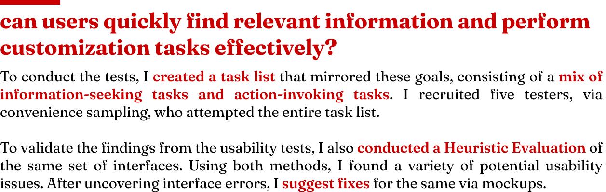
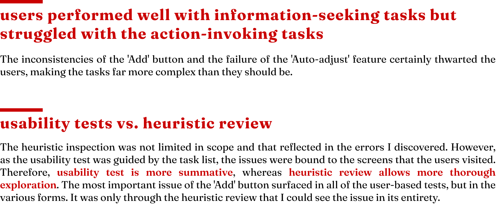

usability testing
-

-
overview
The ‘VisitFinland’ website is a blend of beautiful files embedded in articles along with a dedicated trip planner. I wanted to see how well an interface of this kind holds up in the burgeoning era of the internet, which has also highly influenced our trip-planning experiences. I aim to find out how this kind of website supports potential visitors in planning their travel, right from high-level exploration to more detailed planning. I want to test if users can independently create and manipulate customized itineraries successfully.
client: Graduate Course
when: Nov 2021
role: UX Researcher
methods: Remote Usability Tests, Heuristic Evaluation
tools: Trymyui, Figma

scope of the tasks

target audience

nielsen's 10 usability heuristicsI decided to use Nielsen's 10 Usability Heuristics as it is well-rounded and captures all aspects of the interface well. They’re derived by keeping the users in mind and how best can the interfaces support them.
top usability issues and suggested improvements


retrospective



 2022
2022